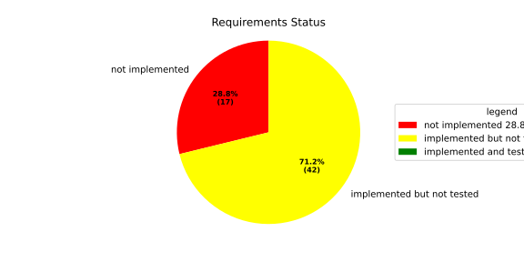
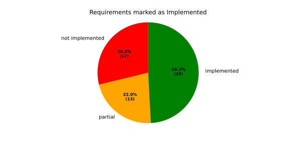
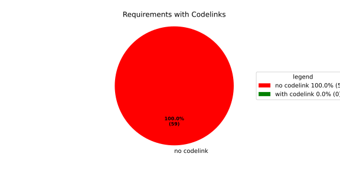

Implementation State Statistics#
Overview#
In Detail#


No needs passed the filters
Failed Tests
Hint: this table is empty by definition, as PRs with failing tests are not allowed to be merged in docs-as-code repo.
No needs passed the filters
Skipped / Disabled Tests
Hint: this table is empty by definition, as we do not allow skipped or disabled tests in docs-as-code repo.
No needs passed the filters
All passed Tests#
No needs passed the filters
Details About Testcases#
Data is not filled out yet within the test cases.
No needs passed the filters
No needs passed the filters